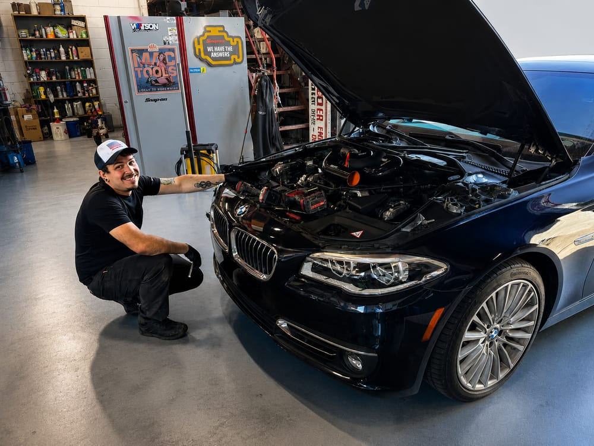

BMW, Mercedes-Benz, Audi, Volkswagen, Land Rover, Volvo, and MINI, serviced right here in St. Helens, so a warning light doesn't have to mean a trip to a Portland dealership.

European repair is our specialty. It's the reason we chose the name River City Auto Haus. When we looked around Columbia County, we saw plenty of European vehicles in driveways and almost nobody equipped to work on them. Owners were stuck choosing between a dealership across the county line and a general shop learning on their car.
European vehicles aren't harder to fix. They're just different. They use their own service procedures, their own fastener and fluid specifications, and factory-specific electronics that generic scan tools only half-understand. A shop that works on them every week reads those cars fluently. That's the gap we fill in this county.
A customer brought us a 2010 Land Rover with a fuel leak, the kind of problem you don't wait on. We traced the leak to a failing fuel pump, then replaced the pump and the affected fuel lines rather than patching around the problem. We diagnosed it, quoted it, got the owner's approval, and fixed it in one visit. No dealership, no guesswork.
BMW, Mercedes-Benz, Audi, Volkswagen, and Porsche, from routine service to major mechanical repair.
Land Rover, Range Rover, MINI, and Jaguar, including the fuel, air suspension, and electrical gremlins these platforms are known for.
Volvo and other European imports. If it came across the Atlantic, call us. Odds are we already work on one like it.
"Came in about $600 under the dealership quote for my 2017 BMW. It's so nice not to have to drive to Portland now. I found my forever mechanic in town!"
— Stephanie Cox
⭐⭐⭐⭐⭐
"Took my Mini down to River City Auto Haus and they had me in and out in no time. Very friendly, very professional and honest. Highly recommend these folks to anyone. Especially for Euro cars!!"
— Shaughn May
⭐⭐⭐⭐⭐
"These guys have done it all on my 2014 BMW F10 550i. Spark plugs, coolant lines for turbos, high pressure fuel pump, rotors. Everything is professional and on time."
— Dillon Alexander
⭐⭐⭐⭐⭐
No. Federal law (Magnuson-Moss) protects your right to have routine service and repairs done by any qualified shop without voiding the manufacturer's warranty. Repairs that are actually covered under an active factory warranty are usually worth doing at the dealer, and we'll tell you when that's the case.
Parts can cost more, but most of the "European = expensive" reputation comes from dealership labor rates and from neglect. These cars reward staying on schedule. Maintained on time by a shop that knows them, ownership costs are far more reasonable than the horror stories suggest.
We use OEM or OE-quality parts appropriate to the repair, and we'll tell you exactly which we're quoting and why. On European vehicles, cut-rate parts frequently cause comebacks. We don't install parts we wouldn't put on our own cars.
Call us before you book that dealership appointment across the bridge. We can probably fix it right here in St. Helens.
Call (503) 867-0609